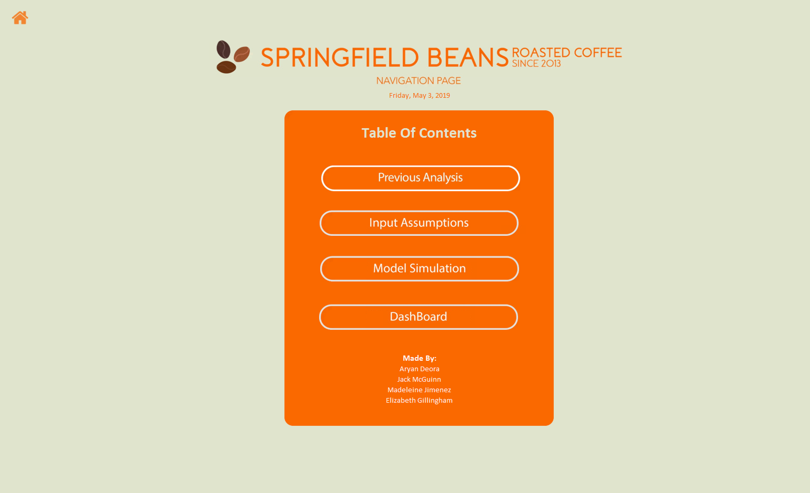
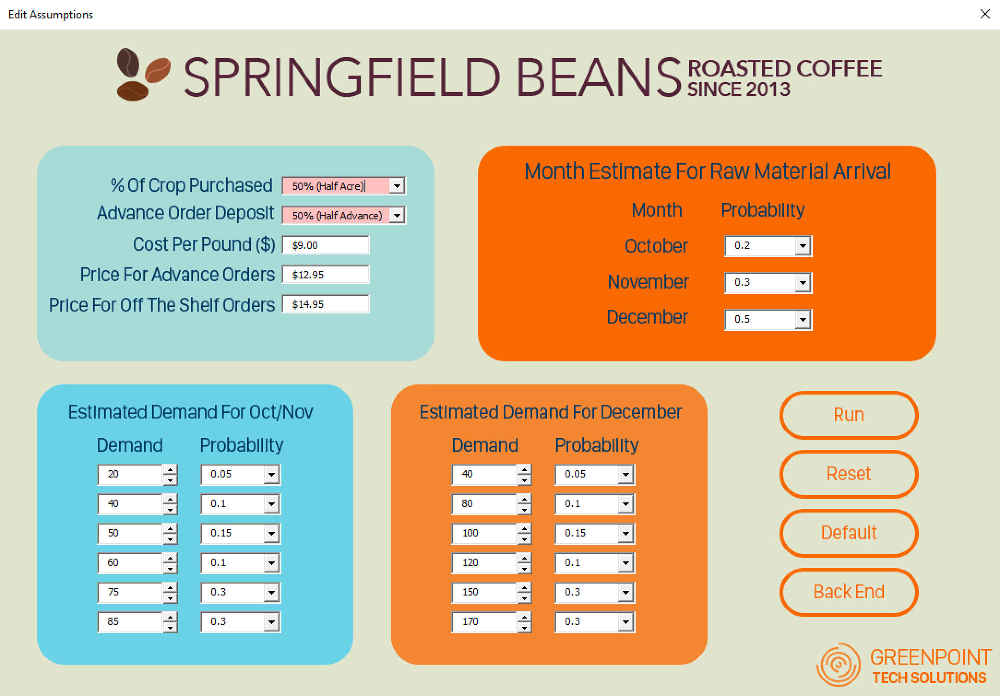
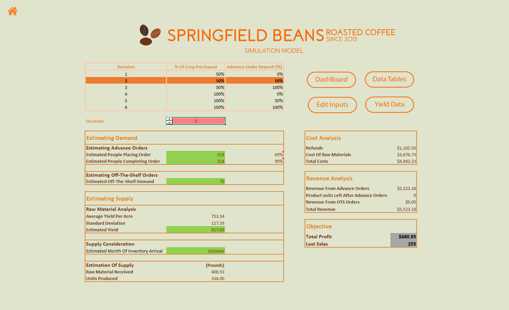
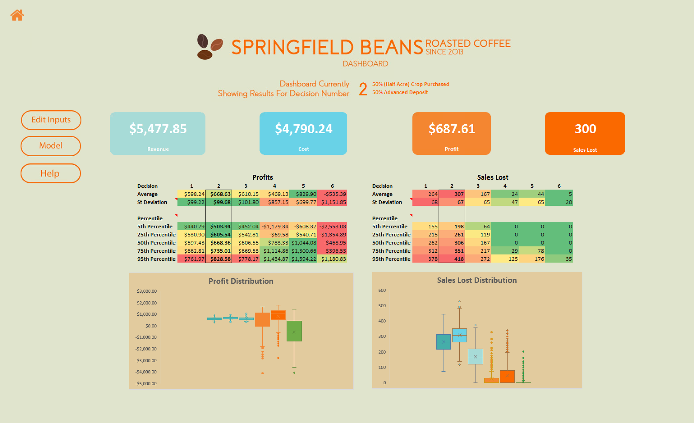

PROJECT
Deloitte & Eli Lilly Analytics Case Competition
January 5 2018
TOOLS USED
- Microsoft Excel
- Visual Basic For Applications (Macros and User Forms)
- Adobe Photoshop CC (Image Assets and Wireframing)
Introduction
BUS-K303: Technology and Business Analysis has been one of my favorite classes during my time at IU. This course is the reason why I have been drawn to the world of stats and programming. Throughout the semester, I learned the true power of Microsoft Excel and how it is much more than a tool to add numbers.
Using different types of functions, we learned how to clean data for analysis. We also studied how to create effective data-visualizations after performing said analysis. We were then drawn towards the realm of statistics, where we were taught how to solve simple linear optimization problems using the built-in plugins for Excel. And finally, and possibly life-changing section was the introduction to uncertainty.
This class was my first exposure to the statistical concepts like central limit theorem, probability distributions and law of large numbers. Realizing that there is order among chaos simply blew my mind. We spent the remainder of the semester creating Monte Carlo Simulations using data tables and random variables. For the final project, the class was assigned to teams of four-five to solve a case sponsored by Deloitte & Eli Lilly and Company.
Case Premise
Springfield Beans is a gourmet coffee shop located in a Midwestern college town. The shop opened in June of 2013 and has been steadily growing their client base, as well as expanding their product offerings. They offer a wide variety of specialty coffee and espresso-based drinks.
Springfield Beans roasts all their coffee in-house. They purchase raw coffee beans from a few different sources, partnering with companies and farms that are known for their high-quality, ethically-sourced coffee beans. In addition to being used in the drinks that they prepare in the shop; the freshly roasted coffee beans are also sold in packaged form in their retail shops. They offer a variety of whole-bean coffees in a variety of package sizes.
Recently, the owners were approached about purchasing, roasting, and selling a new line of specialty coffee beans from a “one-time” harvest from an innovative organic coffee plantation in Columbia. This would be a highly-specialized coffee that would be very desirable to coffee enthusiasts.
The coffee plantation in Columbia expects this crop to be ready sometime late next year, and they expect it will yield somewhere around 800 pounds of coffee beans per acre. Of course, both the harvest date and the yield will depend on weather and other factors. These uncertainties are something that must be considered, along with demand to determine whether this is a good option for the coffee shop, and if so, what is the best way to offer this product to their customers.
Task Assigned
We were presented with the case in two parts. In part 1, we would analyze existing data to understand trends associated with whole bean coffee sales. These trends would help us explain the demand for whole bean coffee at the coffee shop.
In part 2 of the case, we were asked to create a model to help the coffee shop understand all the factors that may influence the outcomes of the decision they are facing. A great deal of uncertainty is involved, and they have several decisions to consider, all of which will influence their profitability.
Software
Our team was instructed to create a tool for our clients that they could use to perform a risk analysis easily. To create the software tool user-friendly and intuitive, I learned Visual Basic for Applications (VBA) over thanksgiving break and learned how to code macros and functions in Excel. The tutorials for which can be found Here. The following are the screenshots of the software my team created.
Home page of the software
UI for the user to make changes to the uncertainties assumed
Results of the Monte Carlo Simulation
Visualization Dashboard of the data analyzed